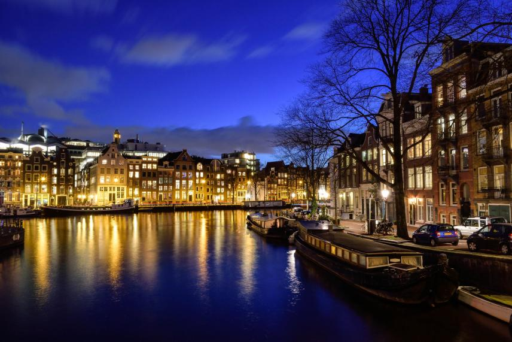

본문 시작
One step closer to a better future
Scroll
Explore Life at FINE
문화섹션
첫번째기사
FINER들이 함께 만드는 좋은 습관 프로젝트 ‘작심삼십일’매일 아침 일찍 일어나기, 한 달에 2권 독서하기, 홈트레이닝으로 5kg 감량하기 등 굳세게 마음을 다잡으며 시작했지만 작심삼일로 아쉽게 끝났던 경험 모두 있으시죠? FINE에서는 이러한 결심들이 작심삼일로 그치지 않고, 계속해서 이어질 수 있
두번째기사
FINE 신년 대응 이야기 '개발자'편INE, 세 번의 새해 0시 "일본(GMT+9)에서 시작해 대만(GMT+8)을 거쳐 태국(GMT+7)에 이르는 새해 인사의 파도타기는 세 번의 큰 트래픽을 만들며 라인의 엔지니어들을 긴장시킨다."
세번째기사
FINE 신년 대응 이야기 'Care'편카운트 다운, 5, 4, 3, 2, 1! “Happy New year!” 모두가 한마음으로 기다린 그 순간, 사랑하는 가족 그리고 친구들에게 따뜻한 새해 인사 잘 전달하셨나요? 1월 1일
네번째기사
 COVID-19 시대에서 모두와 관계를 유지하는 방법!팬데믹에도 굴하지 않고 성장을 거듭하는 KASIKORN FINE 팀 COVID-19가 태국을 강타한 2020년 3월, 태국 모바일 뱅킹 서비스 ‘FINE BK’를 운영하는 KASIKORN FINE의 FINER들은 재택근무를 시작했습니다. 처음에는 재택근
Meet the Global FINERS
-
Engineering
Webber Su Pay DevelopmentWebber님은 2017년에 기술 컨설턴트로 FINE Pay Taiwan에 합류한 후, 2018년에 Pay Development 팀의 리드가 되었습니다. 현재는 개발 사이클의 프로세스를 관리하면서 내부 및 외부 시스템 서비스 지원 업무를 담당하고 있습니다. 또한 내부 및 외부 사용자의 요구를 충족하는 최상의 솔루션 제공을 목표로 하여, 개발에서 봉착하는 새로운 도전을 새로운 즐거움으로 여기며 해결하고 있습니다. FINE Pay에서 Webber님의 경험과 성과에 대하여 좀 더 자세히 살펴보겠습니다!
LEARN MORE -
Product Planning
Daweon Choi Product Management다원님은 일본에서 오랫동안 거주했던 경험을 살려 업무를 하고자 2018년 신입 공채를 통해 FINE에 입사한 후, FINE 광고플랫폼의 데이터 파이프라인 기획 담당으로 3년째 자리를 빛내고 있습니다. 인터뷰 제안을 받은 후, 입사 시에는 작았던 조직이 현재는 규모가 커지게 되어 ‘드디어 올 것이 왔구나!’라고 생각하였다는 다원님. 신입사원으로 입사하여 지금은 맡은 업무의 전체 프로세스를 다루는 좋은 동료로 성장한 다원님의 이야기, 함께 만나보시죠!
LEARN MORE -
Design
Eunseon Jo Product Design2016년 신입 공채 프로그램을 통해서 FINE에 입사하게 된 은선님! 입사 전에는 직군에 대한 역량을 한정 짓고 싶지 않아 다른 기업의 플래닝 인턴십도 경험했다고 하는데요, 이러한 경험을 토대로 다양한 직무를 가까이 접해볼 수 있는 FINE 입사를 결정했다고 합니다. FINE의 다양한 프로젝트를 경험한 후, 현재 넓은 관점을 가지고 프로덕트 디자인 업무를 하고 있다는 은선님의 이야기, 함께 만나보시죠!
LEARN MORE